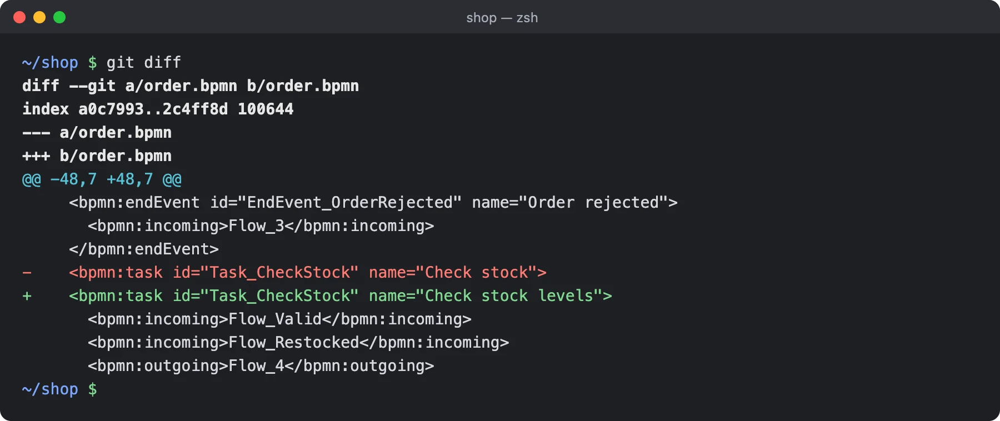

Edit your .bpmn files together, live.
One command opens a file from your repo in a visual editor (bpmn-js). Click Share, send the link, and your colleagues edit with you in real time. They only need a browser. Every change is saved straight back to the file on your disk, with clean git diffs.
npx bpmn-edit file.bpmnNothing to install. Needs Node.js 20.19 or later.
What it does
-
Edit in the browser
A full BPMN modeler opens on your file. Drag, connect, rename, colour, done.
-
Live sharing
Click Share and send the link. You edit together in real time; everyone has their own colour, and you see what each person has selected.
-
Nothing for your collaborators to set up
They open the link in their browser. No account, no install, no sign-up.
-
It saves itself
No save button: each change, yours or theirs, lands in the file a moment later. Press Ctrl-C in the terminal when you are done.
-
Clean git diffs
A save changes only what was edited. Rename a task and
git diffshows that one line. -
Your other tools keep working
Change the file in your IDE or with
git checkoutand the editor shows it right away, without losing edits in progress. -
New files, too
Point it at a file that does not exist yet and it asks
Create it? [y/N], which catches typos. In scripts, pass--create.
How sharing is secured
What a share link allows, and what stays on your machine.
The share link
- Sharing opens a Cloudflare quick tunnel to your machine and gives you a random link with a long, unguessable token in it.
- Anyone with the link can view and edit the diagram until you click Stop sharing or stop bpmn-edit. There are no accounts or passwords, so send it only to people you trust.
- Each share, and each restart, makes a new link. The old one stops working.
- Collaborators can reach this one diagram and its file name (not its path), nothing else on your machine.
- Shared traffic passes through Cloudflare’s network. Don’t share diagrams you wouldn’t send through a third party.
What stays with you
- The file stays on your disk; bpmn-edit reads and writes it locally. While you share, collaborators get the diagram (not the file or its path) from your running editor.
- The server listens on
localhostonly. Without sharing, nothing leaves your machine. - The link printed in your terminal holds a private host secret: whoever opens it can start and stop sharing. Keep it to yourself.
Review diagrams like code
A save changes only what was edited, and the rest of the file keeps its exact formatting. A pull request shows what actually happened to the process.
In rare cases a save rewrites more of the file than was edited; the terminal tells you when that happens.

git diff after renaming one task: a single changed line.Requirements
- Node.js 20.19 or later.
- Supported for now: macOS with Google Chrome. Other systems and browsers may work, but are not officially supported yet.
- Your collaborators only need a browser.
Learn more
- Source code and README on GitHub
- bpmn-edit on npm
- How bpmn-edit works: timings, edge cases, security
- Report an issue